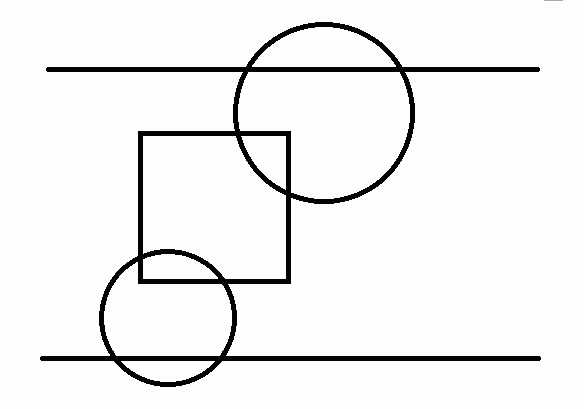
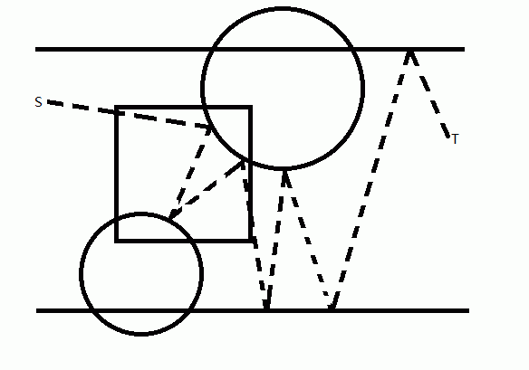

第一行包含两个整数，x，y，表示C点坐标
第二行包含一个数字，n，表示有n个光学元件
接下来n行
第一个数字如果是1，表示元件α，后面会有三个整数xi，yi，ri分别表示圆心坐标和半径
第一个数字如果是2，表示元件β，后面会有四个整数x1，y1，x2，y2分别表示左下角和右上角坐标（矩形都平行，垂直于坐标轴）
如上图，S到T便是一条合法线路。

当然，显然存在光线无法透过的情况，现在交给你一个艰巨的任务，请求出至少拿走多少个光学元件后，存在一条光线线路可以从CD射出。
下面举例说明：

现在假设，取走中间那个矩形，那么就可以构造出一条穿过通道的光路，如图中的S到T。
第一行包含两个整数，x，y，表示C点坐标
第二行包含一个数字，n，表示有n个光学元件
接下来n行
第一个数字如果是1，表示元件α，后面会有三个整数xi，yi，ri分别表示圆心坐标和半径
第一个数字如果是2，表示元件β，后面会有四个整数x1，y1，x2，y2分别表示左下角和右上角坐标（矩形都平行，垂直于坐标轴）
输出包含一行，至少需要拿走的光学元件个数m
1000 100
6
1 500 0 50
2 10 10 20 100
2 100 10 200 100
2 300 10 400 100
2 500 10 600 100
2 700 0 800 100
2
x<=100000，y<=1000，n<=300